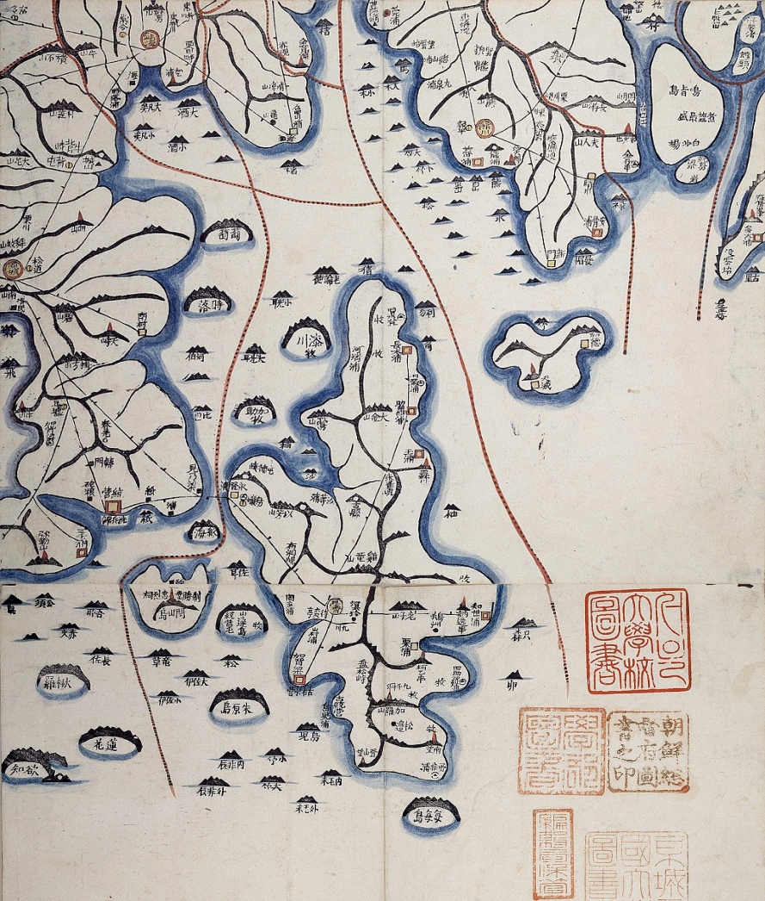

온기가 넘치는 섬, 거제도
따스한 사계절과 넉넉한 인심이 가득한 청정의 고장
그 섬으로
당신을 초대합니다
거제
GEOJE
巨濟
경상남도 거제시
The Second Largest Island in South Korea
01
거제도의 역사
경상남도의 남해안에 있는 시. 거제도와 그 주변의 섬들로 이루어지며, 어업과 양식업이 활발합니다. 옥포에는 규모가 큰 조선 공단이 있습니다. 명승지로 해금강, 고현성, 구천 계곡 따위가 있습니다.
02
거제도의 보물
경상남도의 남해안에 있는 시. 거제도와 그 주변의 섬들로 이루어지며, 어업과 양식업이 활발하다. 옥포에는 규모가 큰 조선 공단이 있다. 명승지로 해금강, 고현성, 구천 계곡 따위가 있다.


03
거제도의 천연 기념물
경상남도의 남해안에 있는 시. 거제도와 그 주변의 섬들로 이루어지며, 어업과 양식업이 활발하다. 옥포에는 규모가 큰 조선 공단이 있다. 명승지로 해금강, 고현성, 구천 계곡 따위가 있다.
Ticket
홍길동